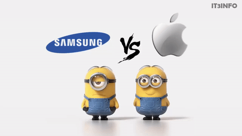

Az Apple és a Samsung hosszú évek óta a világ két legismertebb technológiai vállalata közé tartozik. Mindkét márka kiemelkedő szerepet játszik az okostelefonok piacán, és folyamatos versenyben állnak egymással az innováció, a teljesítmény és a dizájn területén. Az Apple elsősorban az iPhone készülékeiről és az iOS operációs rendszeréről ismert, míg a Samsung a változatos Android alapú telefonjairól és modern kijelzőtechnológiájáról híres.
Az Apple készülékei általában egyszerű kezelhetőséget, gyors rendszert és hosszú szoftveres támogatást kínálnak. A Samsung ezzel szemben nagyobb választékot biztosít a felhasználóknak, valamint sok esetben fejlettebb kamerát és testreszabhatóbb rendszert nyújt. Mindkét vállalat prémium minőségű termékeket készít, ezért sokszor nehéz eldönteni, melyik a jobb választás.
| Apple | Samsung |